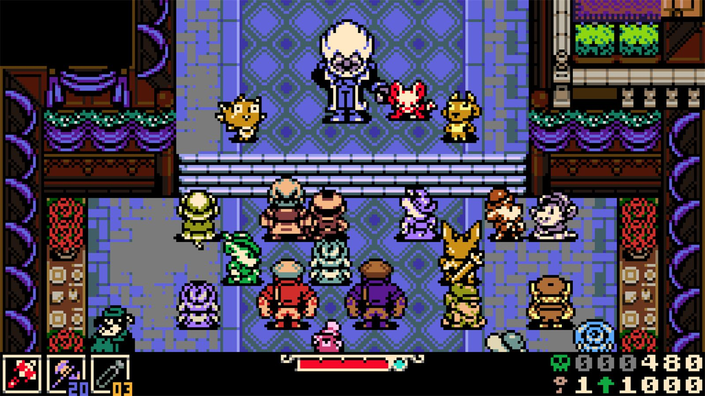
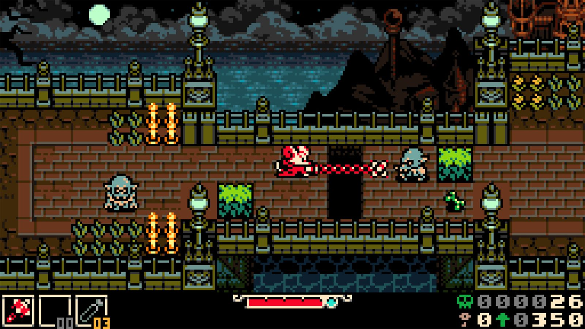
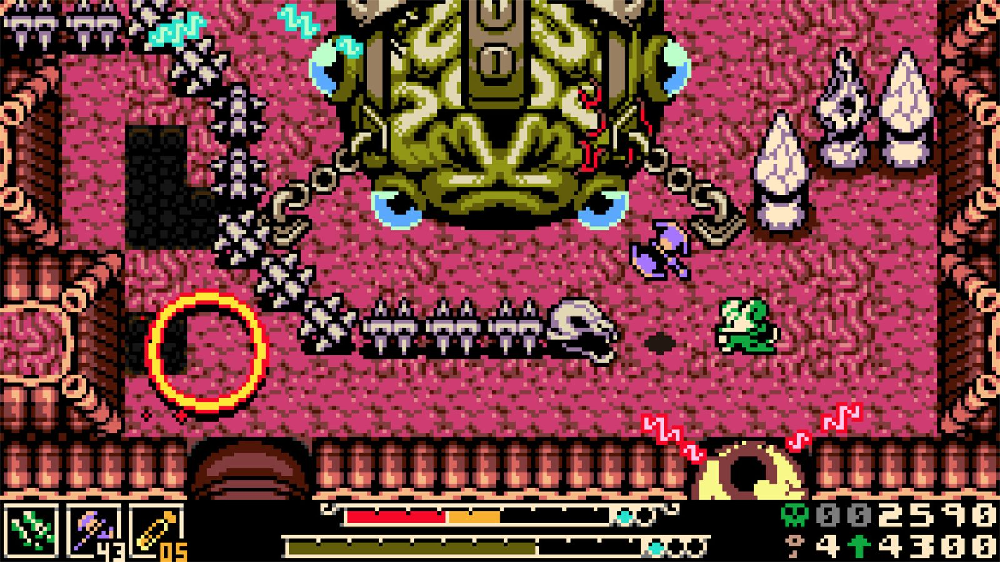

Mina the Hollower es el gran proyecto que Yacht Club Games, el estudio detrás del famoso indie Shovel Knight, ha estado desarrollando durante más de seis años. Tras una campaña de Kickstarter sobresaliente en 2022, donde consiguieron más de 1,2 millones de dólares, y un par de retrasos de más, Mina the Hollower ha visto finalmente la luz este 2026. Se trata de un juego de acción y aventura con estética retro de 8 bits, reminiscente de la época de la Game Boy Color, pero con animaciones, diseño de niveles y mecánicas modernizadas. Ha sido una verdadera delicia.
El jugador toma el control de Mina, una brillante inventora con aspecto de ratón. Mina es una Vaciadora, miembro de una orden de nobles exploradores y científicos capaces de manipular la tierra y excavar en busca de recursos. Un día recibe una llamada urgente de auxilio de su mentor, el Barón Lionel, que gobierna la isla de Tenebrosa. Las fuentes de energía de la isla diseñadas por Mina en el pasado, los Generadores de Chispas, están fallando, y su inestabilidad amenaza la prosperidad alcanzada hasta ahora. Así, Mina emprende su viaje con el objetivo de repararlos y enfrentarse por el camino a toda clase de monstruosidades.

Link's Awakening, pero vitaminizado
El gameplay tiene la base jugable del Link's Awakening de Game Boy, pero vitaminizada. La mecánica que hace a este juego diferente es la capacidad de soterrarte y desplazarte bajo tierra para saltar más lejos o esquivar enemigos. Al fin y al cabo, lo de ser una ratona no es por casualidad. No es una mecánica opcional, vas a tener que usarla con frecuencia, sobre todo para el plataformeo.
Mina puede elegir entre un arsenal de cinco armas que puede mejorar hasta dos veces para añadir movimientos especiales o incrementar el daño. También tienes subarmas, como navajas arrojadizas o portales, que te permiten mayor versatilidad en combate. Además, conforme avanzas vas descubriendo una enorme cantidad de abalorios, es decir, amuletos que al equiparlos dan efectos pasivos. Yo fui con uno durante toda la partida, encontrado relativamente pronto, que me daba una segunda vida al caer en combate. Absolutamente roto.

La exploración es su mejor aspecto
Mi aspecto favorito del juego, sin ningún tipo de duda, es la exploración. No tiene ningún sentido lo divertido que es y lo trabajado que está. Me ha recordado a Elden Ring en cuanto al enorme contenido que tiene. Hay una cantidad masiva de jefes, secretos, misiones secundarias, personajes y minijuegos que puedes encontrar simplemente por desviarte un poquitín del camino. Esta es la dirección que deben seguir todos los juegos a la hora de plantear el contenido secundario. Es genuinamente divertido y es imposible que el jugador no sienta la necesidad de buscarlo todo de forma totalmente voluntaria. Se nota que está hecho con muchísimo amor.

Un diseño de niveles ejemplar
En el centro de la isla se encuentra la ciudad de Ossex, que funciona como base y nexo de acceso a las demás regiones. Tu objetivo es restaurar los seis generadores repartidos por la isla, pero tú eliges en qué orden hacerlo. En mi caso me guie por el periódico del juego, que a través de sus titulares te apunta hacia una dirección recomendada. Me gusta mucho que hayan implementado esto porque es una forma inteligente y orgánica de guiar al jugador sin romper la exploración.
Las regiones están completamente diferenciadas entre sí, nada que ver la una con la otra. Y no hablo solo a nivel artístico y temático, que también, sino de las mecánicas que se explotan en cada una. Verdaderamente cada región se siente como entrar en un mundo totalmente diferente, así que la novedad y la sorpresa están garantizadas. También me ha sorprendido lo bien conectados que están los caminos y las áreas entre sí. Me ha recordado mucho al primer Dark Souls en ese sentido.

Un pixel art al servicio de la jugabilidad
El apartado artístico estilo 8 bits es simplemente excelente. Me encanta la gran variedad de colores que emplea, la cantidad de detalle de su pixel art y la fluidez de todas y cada una de sus animaciones. La estética visual es de terror gótico, propia de obras como Drácula, con tonalidades por lo general oscuras donde predominan los cementerios, las ruinas y la arquitectura victoriana. No obstante, nos encontraremos con alguna zona que rompe con esa norma y muestra elementos más vívidos.

Además, los colores y el diseño visual están al servicio de la jugabilidad. Lo explica muy bien Kerry Brunskill en su análisis para PC Gamer, donde señala que su estilo retro y sus colores vibrantes hacen que "cada peligro mortal destaque". Basta un vistazo para saber si una losa de hielo está a punto de romperse o si un hueco requiere un salto subterráneo o uno normal, y para identificar al instante la parte del cuerpo de un jefe a la que hay que apuntar.
La música corre a cargo de Jake Kaufman, el mismo compositor de la banda sonora de Shovel Knight. Kaufman está especializado en el estilo chiptune, donde fusiona géneros como el rock, lo orquestal o la electrónica. Personalmente no le he cogido cariño a ninguna de las canciones, me gusta muchísimo más el estilo de Toby Fox a la hora de componer música de 8 bits. Sin embargo, creo que esto es una apreciación especialmente subjetiva por mi parte, porque Kaufman hace bien su trabajo de trasladar esa atmósfera propia de la época de la Game Boy.
Desafiante, pero con muchas salidas
El juego es ciertamente desafiante. No es un paseo de rosas y vas a morir unas cuantas veces. No obstante, a mí no me ha parecido difícil por las opciones que te da. En una entrevista a Alec Faulkner, diseñador del juego, le preguntaban si Mina the Hollower era más difícil que Shovel Knight. Él contestaba que no, porque aquí siempre tienes la opción de ir por otro lugar o de cambiar de estrategia ante un jefe. Si ves que lo estás pasando canutas, puedes irte a farmear para subir niveles, mejorar daño y defensa, y volver luego a por él. En mi caso no estuve más de cuatro intentos con ninguno de los 26 jefes del juego. Además, hay un menú de accesibilidad con modificadores para ajustar la dificultad, como aumentar tu ataque, reducir el daño recibido o aumentar las curaciones.

Un aspecto mejorable es que algunos enfrentamientos se reducían a abalanzarme contra el jefe y empezar a pulsar el cuadrado. La victoria estaba prácticamente asegurada a poco que esquivara alguno de sus ataques. No requiere apenas memorizar patrones ni aprender del enfrentamiento. Ya no te digo nada si llevas equipado el abalorio de resucitar una vez por combate. Por eso comentaba que no me parece un juego difícil, y eso no es malo de por sí, pero tampoco me gusta que llegue al extremo de superar un nivel aporreando el mando.
Luego, el sistema de viaje rápido tampoco me acaba de convencer. Tienes unas estaciones de tren que te permiten moverte por el mapa, pero las paradas se cuentan con los dedos de una mano y no me parecen suficientes para un mundo tan grande. Además, si tienes dificultades para orientarte, como es mi caso, lo vas a pasar mal, porque no hay ninguna clase de minimapa. Resulta especialmente frustrante aquí porque hay innumerables bifurcaciones, caminos secretos y salidas que van a hacer que te desorientes en algún momento. Y olvídate de poner cualquier tipo de marcador. Muchas veces me encontraba una cerradura para la que no tenía llave y no tenía forma de señalarla para volver más tarde.
En conclusión, Mina the Hollower es un fantástico juego indie que todo el mundo está obligado a probar. Es sin ningún tipo de duda de lo mejor que ha salido este año. Actualmente es el juego mejor valorado de 2026 en Metacritic con un 91 sobre 100. El amor y la pasión de los desarrolladores por cuidar cada pequeño aspecto hasta el más mínimo detalle hacen que sea una obra digna de admirar. Le he dedicado 20 horas en pocos días porque me parecía genuinamente divertido. Ojalá tener muchos más juegos indies como este.
Lo mejor
- Una exploración enorme y genuinamente divertida, con contenido secundario ejemplar.
- Regiones muy diferenciadas entre sí y áreas perfectamente conectadas.
- Pixel art excelente que además está al servicio de la jugabilidad.
- La mecánica de soterrarse aporta identidad propia al combate y al plataformeo.
Lo peor
- El viaje rápido tiene demasiadas pocas paradas para un mundo tan grande.
- No hay minimapa ni marcadores, y desorientarse es fácil.
- Algunos jefes se superan simplemente aporreando el botón de ataque.
Desglose de puntuación
Veredicto
De lo mejor que ha salido este año. Una exploración fantástica, un diseño de niveles ejemplar y un pixel art precioso. Solo el viaje rápido y la falta de mapa le pasan factura.